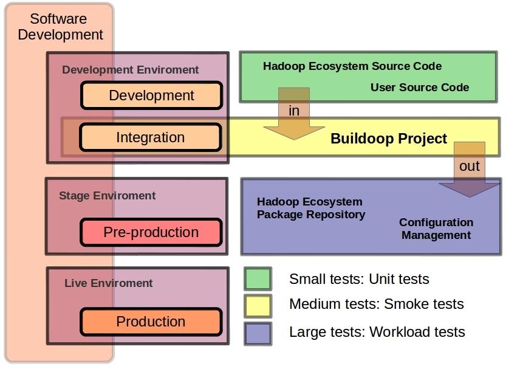

The Buildoop Project
Buildoop Project is an open source collaboration project that provides templates and tools to help you create custom Linux-based systems based on Hadoop ecosystem.
Buildoop Project is suitable for Big Data developers based on Hadoop
It’s suitable both for:
- System developers: hadoop ecosystem bits
- Application developers: Tools integrated with hadoop ecosystem.
You can use any Linux distribution as foundation (Centos 6.x, Ubuntu 12.04.x, …) and create add-ons with Buildoop to convert this distribution in a Hadoop Linux distribution.
Buildoop Software Development life-cycle
The Buildoop Project fits in the integration phase in a classical software development cycle. You can puts together all bits of Hadoop ecosystem and perform a set of tests as a group

Buildoop Project components
The Buildoop Project is splitted in the following parts:
- Buildoop engine: a make-like build command line tool.
- Metadata: A set of metadata information with “buildoop recipes”. “buildoop recipes” specify how a particular package is built. It includes all the package dependencies, source code locations, configuration, compilation, build, install and remove instructions.
- SIT: System Integration Test Framework. The individual software modules are combined and tested as a group by means of virtualized infrastructure.
- Configuration artifacts: Set of configuration management files for operating system deploy and software configuration.